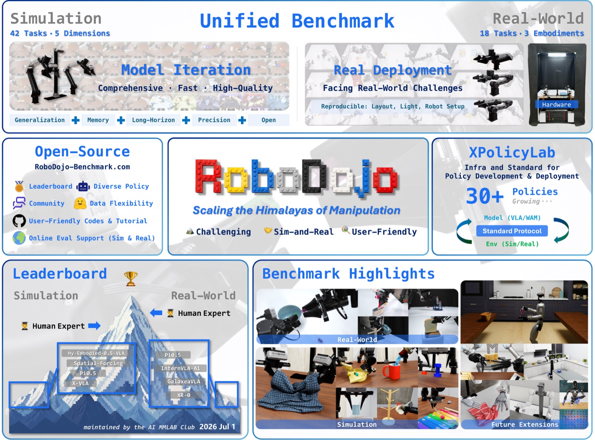

RO
RoboDojo（仿真）
RoboDojo Simulation
42 个仿真任务按六个维度加权的综合分基准，含真机副本。
判词
榜上同时出现专用策略与通用基座模型（如 GPT-6 Astra 一行由 RoboDojo Team 提交），综合分与成功率两列要分开读：成功率平均，六维评分按难度加权。
壹已知之弊
- 综合分与成功率是两列不同口径，不要混用。
- 部分提交由平台代跑，company 记为提交方。
贰碑面
RoboDojo（仿真）
官方榜单 ↗
类型 仿真指标 综合得分行数 20最近 2026-11-03
官方数据文件 2026-11-03 更新，收录 66 条提交，本条只列前 20。RoboDojo 与 RoboTwin 2.0 共用 XPolicyLab 适配层，但任务集与计分不同，两者不要混排；真机部分见「RoboDojo（真机）」。
| # | 模型 | 综合得分 | 协议 | 日期 | 状态 |
|---|---|---|---|---|---|
| 1 | SOLVE NVIDIA |
79.50 |
泛化 66.9 / 精度 83.6 / 长程 72.7 / 记忆 94.8｜成功率 75.0% |
11·03 | 官方榜 |
| 2 | Q0-Preview Qoo Tech |
73.20 |
泛化 64.0 / 精度 65.3 / 长程 69.8 / 记忆 93.7｜成功率 67.3% |
11·03 | 官方榜 |
| 3 | Agent-as-Policy Realworld Labs |
63.46 |
泛化 60.6 / 精度 51.9 / 长程 52.6 / 记忆 88.8｜成功率 54.4% |
11·03 | 官方榜 |
| 4 | GO-3 Nano Preview AGIBOT |
61.95 |
泛化 36.5 / 精度 78.7 / 长程 68.2 / 记忆 64.5｜成功率 56.7% |
11·03 | 官方榜 |
| 5 | SenseNova-RoboRSI SenseNova |
57.10 |
泛化 54.9 / 精度 40.2 / 长程 66.4 / 记忆 67.0｜成功率 49.2% |
11·03 | 官方榜 |
| 6 | PyRUA-Lean PKU DAGroup |
53.93 |
泛化 48.3 / 精度 44.8 / 长程 54.3 / 记忆 68.4｜成功率 48.4% |
11·03 | 官方榜 |
| 7 | HexaShell-Preview HexaFuture |
51.98 |
泛化 39.2 / 精度 41.3 / 长程 42.9 / 记忆 84.5｜成功率 44.8% |
11·03 | 官方榜 |
| 8 | JoyAI-VL Joy Future Academy |
48.67 |
泛化 31.1 / 精度 44.3 / 长程 40.5 / 记忆 78.8｜成功率 41.2% |
11·03 | 官方榜 |
| 9 | WorldScape-R²SI Manifold AI |
45.93 |
泛化 43.0 / 精度 23.5 / 长程 51.5 / 记忆 65.8｜成功率 37.3% |
11·03 | 官方榜 |
| 10 | EmbodiedEvo Einsia.AI |
43.40 |
泛化 35.2 / 精度 25.1 / 长程 33.8 / 记忆 79.4｜成功率 36.4% |
11·03 | 官方榜 |
| 11 | WALL-OSS-1.0-lite X Square Robot |
42.59 |
sft 单任务微调 48.0 / 泛化 46.7 / 精度 38.2 / 长程 49.9 / 记忆 57.4 / 开放场景 20.8｜成功率 35.0% |
11·03 | 官方榜 |
| 12 | VPP2 RobotEra |
39.26 |
sft 单任务微调 47.9 / 泛化 36.4 / 精度 43.0 / 长程 56.3 / 记忆 56.0 / 开放场景 4.6｜成功率 32.3% |
11·03 | 官方榜 |
| 13 | Era0-Preview RobotEra |
38.63 |
sft 单任务微调 46.2 / 泛化 42.5 / 精度 38.2 / 长程 49.0 / 记忆 55.2 / 开放场景 8.2｜成功率 33.5% |
11·03 | 官方榜 |
| 14 | PhysicalRSI HKU MMLab & KAI |
38.12 |
泛化 21.3 / 精度 38.0 / 长程 46.4 / 记忆 46.7｜成功率 33.0% |
11·03 | 官方榜 |
| 15 | Awomo-0.5 Awomo |
35.34 |
sft 单任务微调 38.1 / 泛化 30.3 / 精度 39.6 / 长程 40.4 / 记忆 42.3 / 开放场景 24.1｜成功率 29.6% |
11·03 | 官方榜 |
| 16 | Simate-beta Simate |
33.95 |
sft 单任务微调 40.1 / 泛化 35.1 / 精度 34.4 / 长程 57.8 / 记忆 33.3 / 开放场景 9.1｜成功率 28.0% |
11·03 | 官方榜 |
| 17 | Rex-M1 Preview FT Lab & VisIncept |
33.79 |
sft 单任务微调 40.6 / 泛化 34.0 / 精度 32.8 / 长程 46.9 / 记忆 48.5 / 开放场景 6.7｜成功率 27.4% |
11·03 | 官方榜 |
| 18 | HWM-0 Preview Horizon Robotics |
32.81 |
sft 单任务微调 39.4 / 泛化 27.0 / 精度 37.6 / 长程 46.0 / 记忆 46.9 / 开放场景 6.5｜成功率 27.2% |
11·03 | 官方榜 |
| 19 | VPP2-Preview RobotEra |
31.40 |
sft 单任务微调 37.8 / 泛化 31.3 / 精度 33.8 / 长程 35.3 / 记忆 50.8 / 开放场景 5.8｜成功率 25.6% |
11·03 | 官方榜 |
| 20 | InternW0-Δ Shanghai AI Lab |
30.77 |
sft 单任务微调 35.8 / 泛化 30.1 / 精度 32.0 / 长程 46.3 / 记忆 34.7 / 开放场景 10.8｜成功率 23.9% |
11·03 | 官方榜 |
叁驿报
11·12
港科大（广州）与欧拉万象的 SLA-Preview 列 RoboDojo 真机榜第一
据机器之心报道，SLA-Preview 在 RoboDojo 真机官方榜 18 项任务均分 42.3、完整成功率 33.9%，列第一；同榜 π0.5 为 22.9 分、12.8%。
11·09Claude Fable 5.2 自报 RoboDojo 仿真成功率 64.9%
Anthropic 发布 Claude Fable 5.2，自测 RoboDojo 仿真平均成功率 64.9%，同表 GPT-6 Astra 为 29.8%；该分数未进入官方榜。
10·30Q0-Preview 以 74.20 分接替 GO-3 Nano 列 RoboDojo 仿真第一
RoboDojo 仿真官方榜显示，Qoo Tech 的 Q0-Preview 以 74.20 分列第一；据虎嗅，该榜拟 12 月 1 日起单列 Agent 子榜。
肆同类之碑